Social Templates
社群貼文範本
Mr.Whisky 實際 IG / FB 貼文視覺範例。依比例分為「橫式（FB / IG 橫向）」「直式（IG Stories / Reels 封面）」「拼接（IG 多圖貼文）」三類，並附通用版型守則。可作為合作攝影師、設計師、AI 工具的調性基準。
橫式 — FB / IG 橫向、Banner
3:2 或 16:9 比例。共通元素：深色背景、單瓶（或品酒會主桌）聚焦、暖琥珀光線、右下角白色半透明 Mr.Whisky 浮水印、底部疊加「禁止酒駕／未滿 18 歲不得飲酒」警語條。
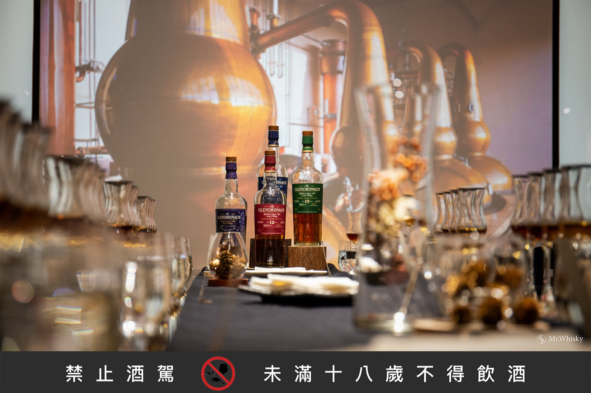
品酒會 · Glendronach 主桌與蒸餾器投影
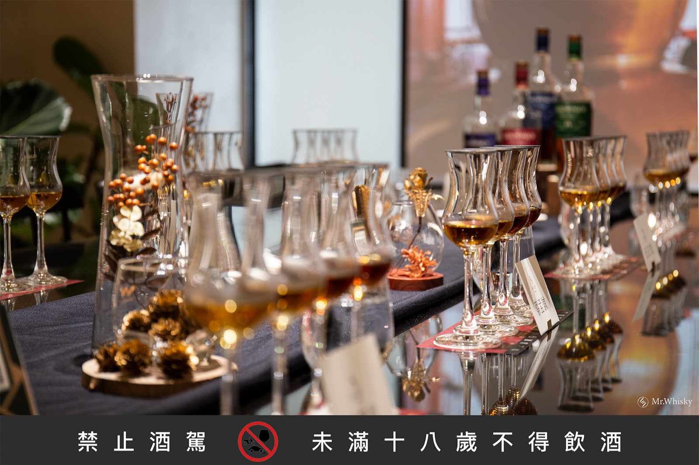
品酒會 · 酒款並列 + 杯具陳列
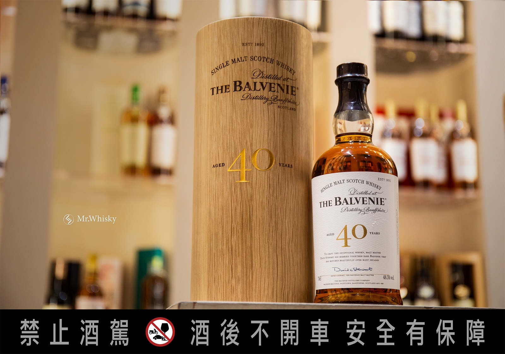
百富 40 · 高端單瓶橫式構圖
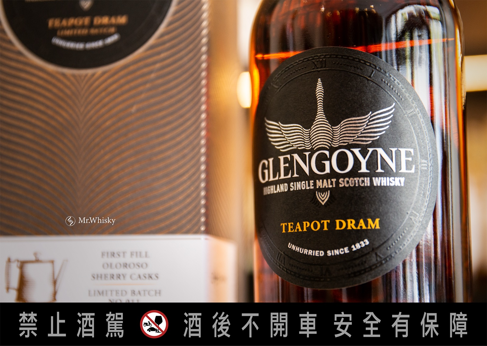
Glengoyne Teapot 11 · 陳列櫃前焦點構圖
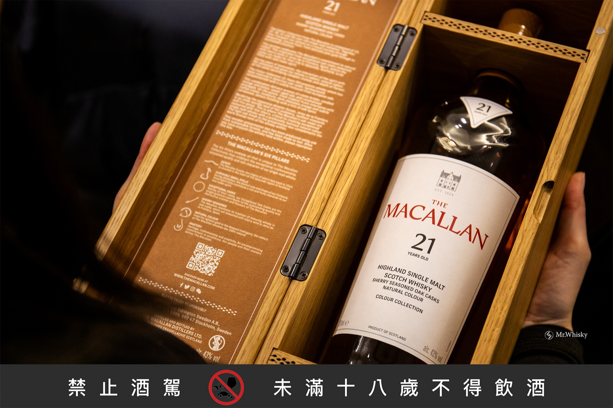
麥卡倫臻彩 21 · 木盒開盒展示
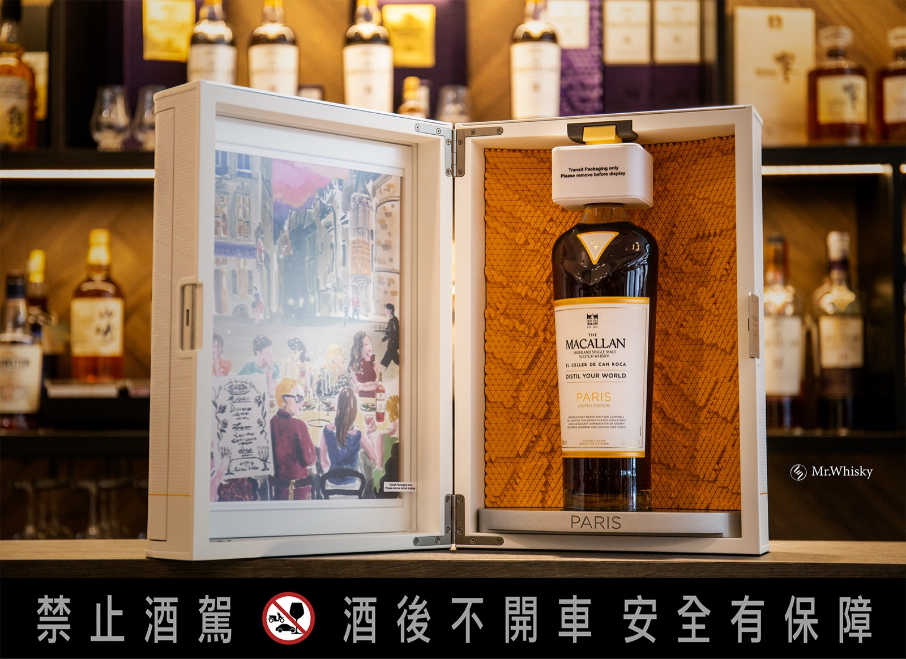
Paris 限定 · 雙瓶禮盒
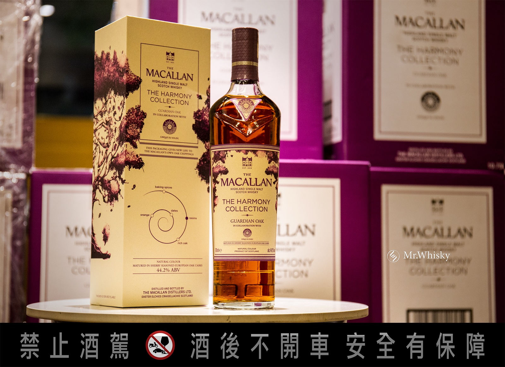
紫月原箱檔 · 整箱原木箱配酒瓶（高端配貨／包桶情境）
直式 — IG Stories / Reels 封面 / 手機優先
9:16 或 4:5 比例。共通元素：縱向構圖、單瓶＋酒杯（可加乾燥花、皮革等暖色道具）、左上 / 左中 Mr.Whisky 浮水印、底部警語條。
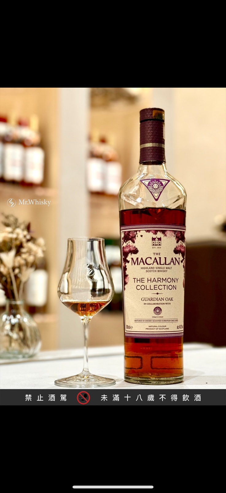
麥卡倫 The Harmony · 單瓶 + 酒杯（手機優先）
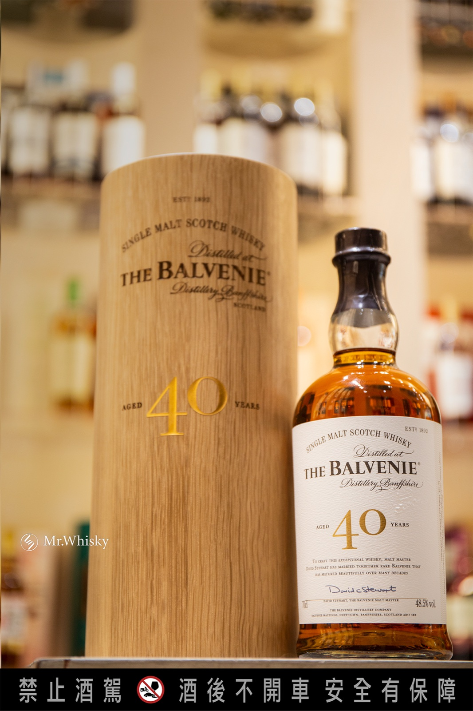
百富 40 · 直式高瓶身特寫
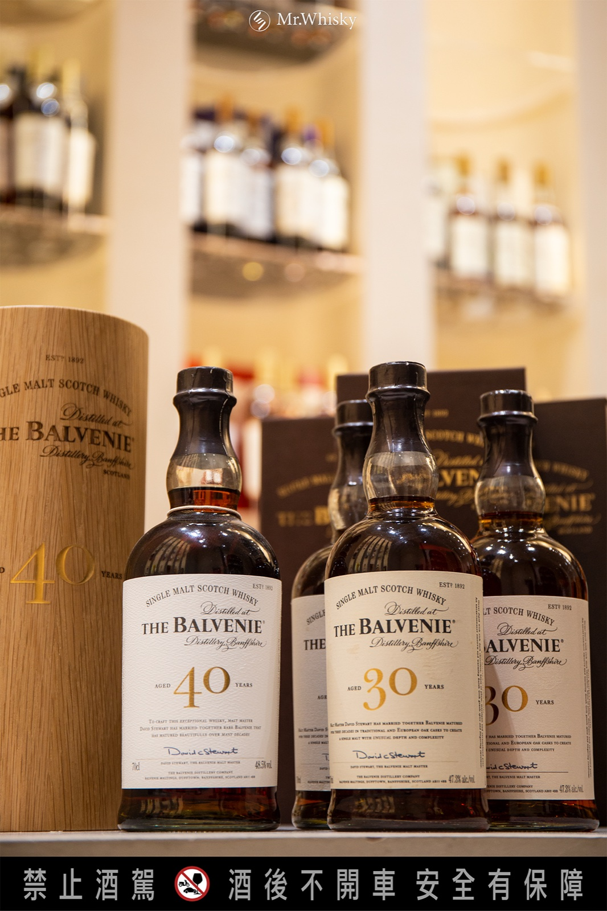
百富 30 + 40 · 雙瓶並列
拼接 — IG 多圖貼文 / 整體視覺
把同一支酒（或同系列）的不同視角拼成一張，作為 IG 第一張封面圖；觀眾不需滑就能看到整體故事。比例多為 4:5 或 1:1。
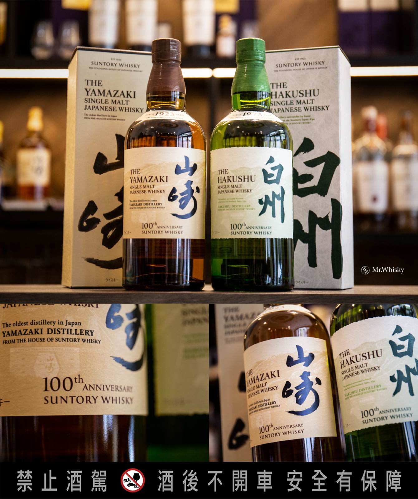
山崎 & 白州 百週年 · 主圖 + 標籤特寫雙拼
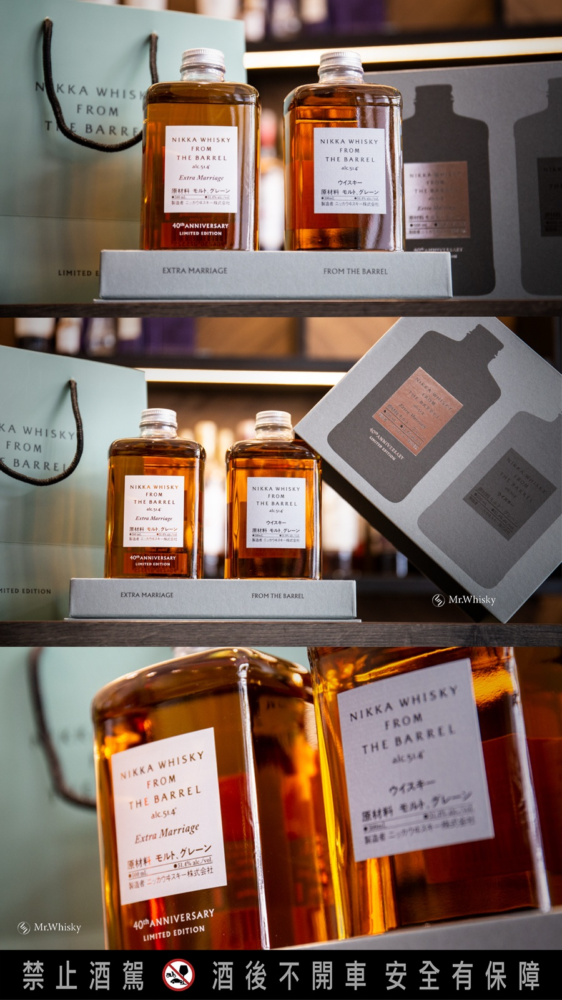
Nikka From The Barrel · 多視角拼接
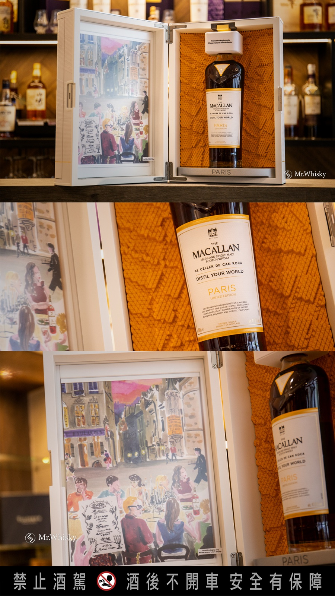
Paris · 整體 + 細節雙圖拼版
小樣 — 商品上架前測試圖
用於配貨資訊、新品到貨快訊。光線可較隨意（店內陳列櫃、配貨桌面），但仍維持深色基調與 Mr.Whisky 浮水印。
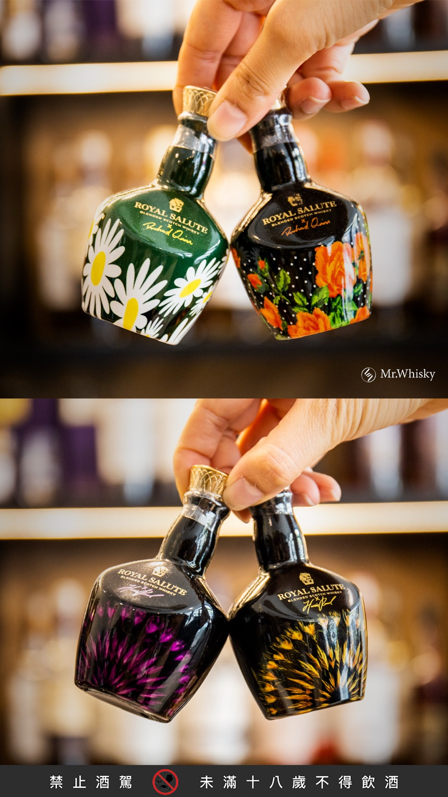
Royal Salute · 配貨小樣圖
通用版型守則
| 項目 | 建議 | 禁忌 |
|---|---|---|
| 浮水印 | ✓ 白色半透明 Mr.Whisky logo，置於右下或左中 | ✗ 大尺寸彩色 logo 蓋過主體 |
| 警語條 | ✓ 底部黑灰條 + 「禁止酒駕／未滿十八歲不得飲酒」白字 | ✗ 省略警語、紅底警語 |
| 背景 | ✓ 店內陳列櫃、深色木桌、皮革、布料 | ✗ 純白棚拍、彩色繽紛桌布 |
| 文案疊圖 | ✓ 英文襯線（EB Garamond / Garamond）+ 中文宋體，米白色字 | ✗ 黑體粗字、霓虹色、Comic Sans 類 |
| Hashtag | ✓ #mrwhisky #威士忌先生 + 酒款 + 系列 | ✗ 無關熱門 hashtag 灌量 |
| 文字長度（IG 主文） | ✓ 80–200 字，第一段點題、第二段背景、第三段價格／配貨資訊 | ✗ 一句話不到、超過 500 字長文 |